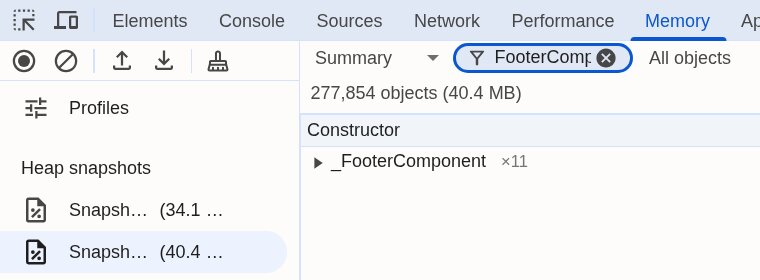

Not happy with the result of the previous exercise? Go to the labs/performance/exercise-4 directory and run npm install, then npm start
Open DevTools, Memory, Heap snapshot. On the home page: trash icon, snapshot 1.
5 rounds: select a playground in the list, click Detaljer in the footer, click Tilbage til kortet.
Trash icon, snapshot 2.
